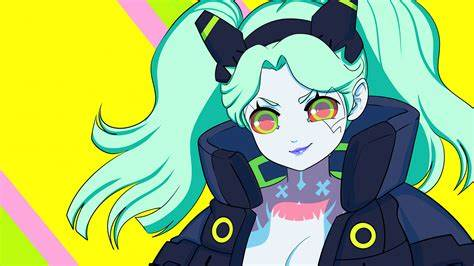

David Martinez was born in the Santo Domingo district of Night City in 2058. He joined up with Maine's crew
of Edgerunner's in the year 2076.
Following the death of Maine, David took leadership of the Edgerunner crew
until the end of 2076. David is a very kind individual, He is very loyal to his associates and their cause.
He is very steadfast and focused on what he wants.
He is also very strong in heart, body, and mind and
he
uses this to the fullest extent on all of the gigs with his crew.
"No kid from Santo will ever be a suit, didn't want to be one anyway"- David Martinez
Associates
David often works with a large contingent of associates throughout Night City.
Most often Lucy, Kiwi, Maine, Dorio, Pilar and Rebecca. The direction for his crew often comes from
the fixer's Wakako Okada and Faraday.
Often Falco is hired as a getaway driver for the crew, however he is not officially a member.
Edgerunner Logo
Edgerunner Crew
Wakako Okada
Left to Right-Kiwi, Dorio, Maine and Pilar

Rebecca
David's Fixer Faraday
Lucy and David
Skills
David has large skill set often including his adept knowledge of multiple weapons, ranging
from pistols to shotguns. He is also trained as a getaway driver.
David is an avid chrome junkie,
due to
this he is installed with a large amount of cyberware. Sharpening his skills, reflexes and strength.
David's CyberWare list is extensive, including,
David after chipping the Sandevistan
Gorilla Arms
Reinforced Tendons
Mantis Blades
Synth Lungs
Militech Falcon Mk. 5 Sandevistan
Projectile Launcher
Quotes from The Edgerunners
“You don’t make a name as a Cyberpunk by how you live, you make a name by how you die”-Lucy Kushinada
David's final showdown with Adam Smasher
“You’re the guy who jumps into the fire to rescue someone, anyone. Even when he knows he’s going to
get
burned”-Lucy to David


{kind=link}
{kind=link}
{kind=link}
{kind=link}
{kind=link}